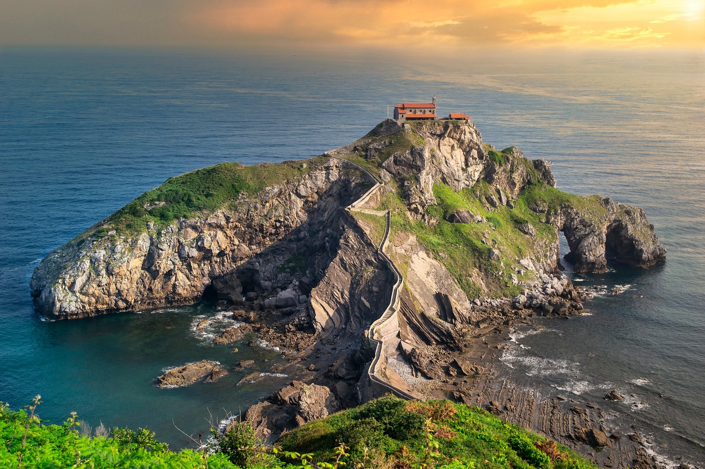
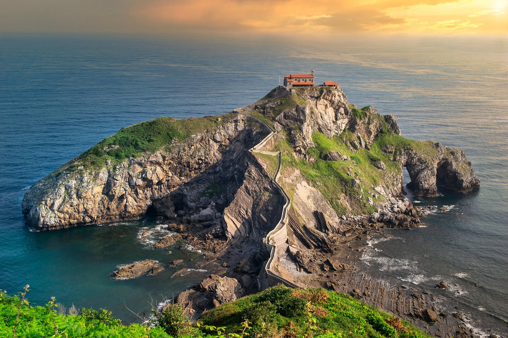
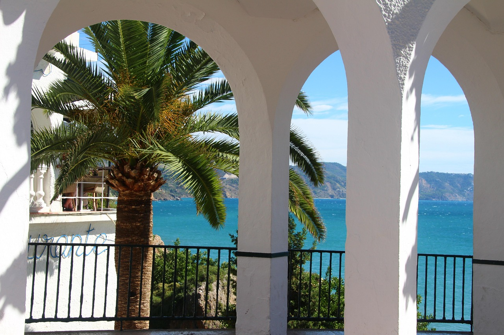

Destinos increibles
Euskadi y alrededores
+info Lo mejor de Euskadi es una combinacion de paisajes impresionantes como costas y valles verdes, cultura única y una excelente gastronomia.
Visita mi blog.
Euskadi y alrededores
+info Lo mejor de Euskadi es una combinacion de paisajes impresionantes como costas y valles verdes, cultura única y una excelente gastronomia.
Barcelona
+info
Ciudad moderna y cultural, ha sido reconocidad como "Ciudad global" por su gran riqueza cultural, histórica y arquitectónica.
Andalucía
+info Gran diversidad natural, con playas y sierras espectaculares, su riqueza cultural e histórica, el flamenco, su gastronomía y su identidad multicultural.